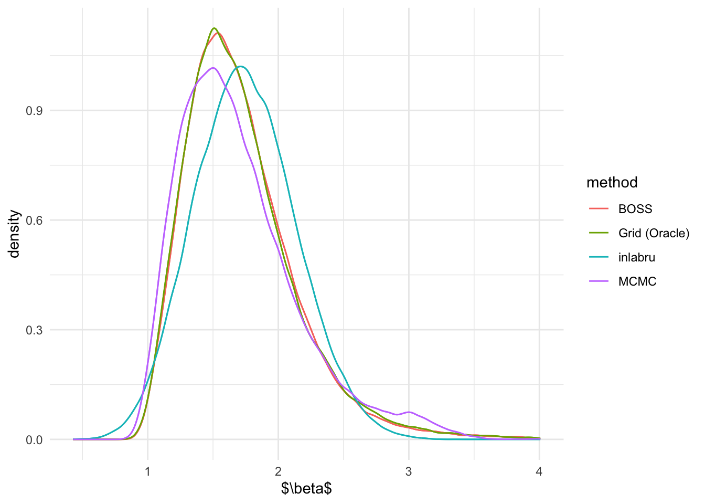
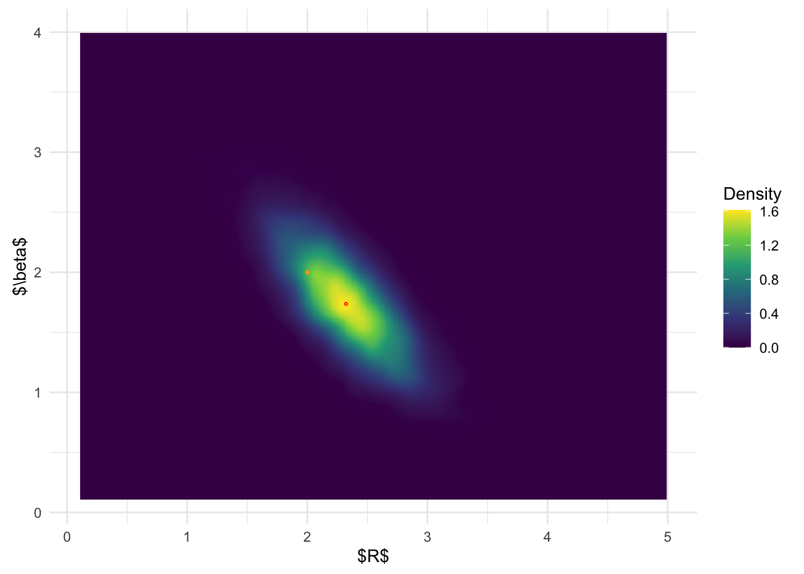
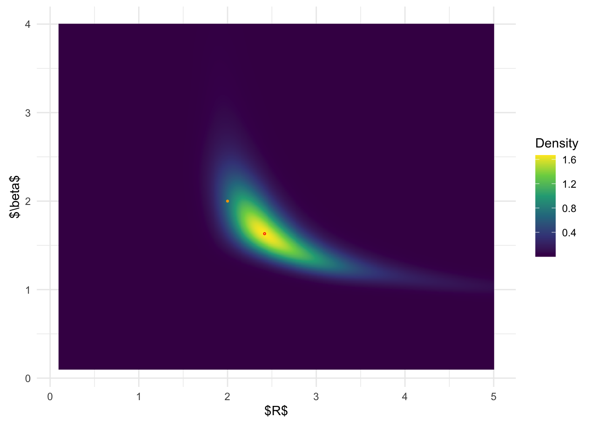

Simulation 3: Two-dimensional Non-linear Regression
Dayi Li
2025-04-19
Last updated: 2025-04-20
Checks: 7 0
Knit directory: BOSS_website/
This reproducible R Markdown analysis was created with workflowr (version 1.7.1). The Checks tab describes the reproducibility checks that were applied when the results were created. The Past versions tab lists the development history.
Great! Since the R Markdown file has been committed to the Git repository, you know the exact version of the code that produced these results.
Great job! The global environment was empty. Objects defined in the global environment can affect the analysis in your R Markdown file in unknown ways. For reproduciblity it’s best to always run the code in an empty environment.
The command set.seed(20250415) was run prior to running
the code in the R Markdown file. Setting a seed ensures that any results
that rely on randomness, e.g. subsampling or permutations, are
reproducible.
Great job! Recording the operating system, R version, and package versions is critical for reproducibility.
Nice! There were no cached chunks for this analysis, so you can be confident that you successfully produced the results during this run.
Great job! Using relative paths to the files within your workflowr project makes it easier to run your code on other machines.
Great! You are using Git for version control. Tracking code development and connecting the code version to the results is critical for reproducibility.
The results in this page were generated with repository version 3478135. See the Past versions tab to see a history of the changes made to the R Markdown and HTML files.
Note that you need to be careful to ensure that all relevant files for
the analysis have been committed to Git prior to generating the results
(you can use wflow_publish or
wflow_git_commit). workflowr only checks the R Markdown
file, but you know if there are other scripts or data files that it
depends on. Below is the status of the Git repository when the results
were generated:
Ignored files:
Ignored: .DS_Store
Ignored: .Rproj.user/
Ignored: analysis/.DS_Store
Ignored: data/sim3/
Note that any generated files, e.g. HTML, png, CSS, etc., are not included in this status report because it is ok for generated content to have uncommitted changes.
These are the previous versions of the repository in which changes were
made to the R Markdown (analysis/sim3.Rmd) and HTML
(docs/sim3.html) files. If you’ve configured a remote Git
repository (see ?wflow_git_remote), click on the hyperlinks
in the table below to view the files as they were in that past version.
| File | Version | Author | Date | Message |
|---|---|---|---|---|
| html | 3478135 | david.li | 2025-04-20 | Build site. |
| Rmd | 3f8195f | david.li | 2025-04-20 | wflow_publish("analysis/sim3.Rmd") |
| html | 6cea47c | david.li | 2025-04-20 | Build site. |
| Rmd | d9facf4 | david.li | 2025-04-20 | wflow_publish("analysis/sim3.Rmd") |
| html | 657dd74 | david.li | 2025-04-20 | Build site. |
| Rmd | 1026e5b | david.li | 2025-04-20 | wflow_publish("analysis/sim3.Rmd") |
| html | 3528574 | david.li | 2025-04-20 | Build site. |
| html | 13358d2 | david.li | 2025-04-20 | Build site. |
| Rmd | 78186b1 | david.li | 2025-04-20 | Simulation 3 |
| html | 78186b1 | david.li | 2025-04-20 | Simulation 3 |
| html | cc32863 | david.li | 2025-04-19 | Build site. |
| Rmd | 2011696 | david.li | 2025-04-19 | wflow_publish("analysis/sim3.Rmd") |
Data
library(tidyverse)
library(tikzDevice)
library(rstan)
library(INLA)
library(inlabru)
library(modeest)
function_path <- "./code"
output_path <- "./output/sim3"
data_path <- "./data/sim3"
source(paste0(function_path, "/00_BOSS.R"))Consider the following non-linear regression model:
\[\begin{align*} y_i \mid \log(\rho_i) &\overset{ind}{\sim}\mathcal{N}(\log\rho(r_i), \sigma^2), \\ \log\rho(r_i) &= \log\rho_0 - \gamma\log\left\{1 + (r_i/R)^\beta\right\}. \end{align*}\]
We simulate \(n = 200\) data points based on the above model with \(\rho_0 = 10\), \(R = 2\), \(\beta = 2\), \(\gamma = -2.5\), and \(\sigma = 0.5\). The inferential goal is the nuisance parameters \(R\) and \(\beta\).
r <- seq(0, 20, length.out = 200)
beta <- 10
a <- 2
b <- 2
c <- -2.5
set.seed(1234)
Ir <- beta*(1 + (r/a)^b)^c
lr <- log(Ir) + rnorm(length(r), 0, 0.5)
data <- data.frame(r, lr)
ggplot(data, aes(r, lr)) + geom_point() + ylab('y')
| Version | Author | Date |
|---|---|---|
| cc32863 | david.li | 2025-04-19 |
inlabru
We first run inlabru to to fit the model. We set the
following priors for the parameters:
\[\begin{align*} \rho_0 \sim \mathcal{N}(0, 1000), \ & R \sim \mathrm{Unif}(0.1, 5), \\ \beta \sim \mathrm{Unif}(0.1, 4), \ \gamma \sim \mathcal{N}(0, & 1000), \ \sigma^2 \sim \mathrm{Inv-Gamma}(1, 10^{-5}). \end{align*}\]
a_fun <- function(u){
qunif(pnorm(u), 0.1, 5)
}
b_fun <- function(u){
qunif(pnorm(u), 0.1, 4)
}
cmp <- ~ a(1, model="linear", mean.linear=0, prec.linear=1) +
b(1, model="linear", mean.linear=0, prec.linear=1) +
c(1) + Intercept(1)
form <- lr ~ Intercept + c*log(1 + (r/a_fun(a))^b_fun(b))
fit <- bru(cmp, formula = form, data = data, family = 'gaussian')BOSS
Now let’s run BOSS.
BOSS-modal
We first specify the (unnormalized) log-posterior for \((R,\beta)\). Note that for this specific problem, the unnormalized log-posterior has a closed-form expression:
# specify the objective function for BOSS: unnormalized log posterior of (R, beta)
eval_func <- function(par, x = r, y = lr){
a <- par[1]
b <- par[2]
n <- length(r)
X <- matrix(cbind(rep(1, n), log(1 + (r/a)^b)), ncol = 2)
Vb <- solve(t(X) %*% X + diag(1/1000, 2))
P <- diag(n) - X %*% Vb %*% t(X)
mlik <- log(det(Vb))/2 - log(1000) + lgamma((n+1)/2) - (n+1)/2*log(1e-5 + t(y) %*% P %*% y/2) -
n/2*log(pi) -5*log(10)
return(mlik)
}BOSS-aghq
Next, we run the BOSS algorithm where the stopping criteria is based on the convergence of the posterior mode. Specifically, we check the modal convergence every \(5\) BO iteration, and consider the convergence statistics of the average \(5\) nearest neighbor distance around the current mode.
set.seed(123)
res_opt_modal <- BOSS(eval_func, criterion = 'modal', update_step = 5, max_iter = 100, D = 2,
lower = rep(0.1, 2), upper = c(5, 4),
noise_var = 1e-6,
modal_iter_check = 5, modal_check_warmup = 20, modal_k.nn = 5,
modal_eps = 0.01,
initial_design = 5, delta = 0.01^2,
optim.n = 5, optim.max.iter = 100)
save(res_opt_modal, file = paste0(output_path, "/BOSS_modal_sim3.rda"))The above BOSS algorithm with modal convergence
criterion converged in \(65\)
iterations.
We then run BOSS using AGHQ as convergence statistics. Again, we check for convergence every \(5\) iterations. The convergence criteria is relative difference in AGHQ statistics being less than \(0.05\).
set.seed(123)
res_opt_aghq <- BOSS(eval_func, criterion = 'aghq', update_step = 5, max_iter = 100, D = 2,
lower = rep(0.1, 2), upper = c(5, 4),
noise_var = 1e-6,
AGHQ_k = 3, AGHQ_iter_check = 5, AGHQ_check_warmup = 20, AGHQ_eps = 0.05, buffer = 1e-4,
initial_design = 5, delta = 0.01^2,
optim.n = 5, optim.max.iter = 100)
save(res_opt_aghq, file = paste0(output_path, "/BOSS_aghq_sim3.rda"))The above BOSS algorithm with aghq criterion converged
with \(75\) iterations.
MCMC
Lastly, we implement the MCMC-based method using stan to
obtain the oracle.
set.seed(1234)
MCMC_fit <- stan(
file = "code/nlreg.stan", # Stan program
data = list(x = r, y = lr, N = length(r)), # named list of data
chains = 4, # number of Markov chains
warmup = 1000, # number of warmup iterations per chain
iter = 20000, # total number of iterations per chain
cores = 4, # number of cores (could use one per chain)
algorithm = 'NUTS')
# thin the samples fo plotting
MCMC_samp <- as.data.frame(MCMC_fit)
#MCMC_samp_thin <- MCMC_samp[seq(1, 76000, by = 8),]
save(MCMC_samp, file = paste0(output_path, "/MCMC_sim3.rda"))Results Comparison
Marginal Posterior Distributions
We first compare the marginal posterior distributions of \(R\) and \(\beta\) from inlabru,
modal-based BOSS, and AGHQ-based BOSS, and MCMC.
# inlabru marginal samples
set.seed(1234)
inla.samples.a <- a_fun(inla.rmarginal(49500, fit$marginals.fixed$a))
inla.samples.b <- b_fun(inla.rmarginal(49500, fit$marginals.fixed$b))
# BOSS-modal marginal samples
load(paste0(output_path, "/BOSS_modal_sim3.rda"))
data_to_smooth <- list()
unique_data <- unique(data.frame(x = res_opt_modal$result$x, y = res_opt_modal$result$y))
data_to_smooth$x <- as.matrix(dplyr::select(unique_data, -y))
data_to_smooth$y <- (unique_data$y - mean(unique_data$y))
square_exp_cov <- square_exp_cov_generator_nd(length_scale = res_opt_modal$length_scale, signal_var = res_opt_modal$signal_var)
surrogate <- function(xvalue, data_to_smooth, cov){
predict_gp(data_to_smooth, x_pred = xvalue, choice_cov = cov, noise_var = 1e-6)$mean
}
ff <- list()
ff$fn <- function(x) as.numeric(surrogate(x, data_to_smooth = data_to_smooth, cov = square_exp_cov))
x.1 <- (seq(from = 0.1, to = 5, length.out = 300) - 0.1)/4.9
x.2 <- (seq(from = 0.1, to = 4, length.out = 300) - 0.1)/3.9
x_vals <- expand.grid(x.1, x.2)
names(x_vals) <- c('x.1','x.2')
x_original <- t(t(x_vals)*(c(5, 4) - c(0.1, 0.1)) + c(0.1, 0.1))
fn_vals <- apply(x_vals, 1, function(x) ff$fn(x = matrix(x, ncol = 2))) + mean(unique_data$y)
# normalize
lognormal_const <- log(sum(exp(fn_vals))*0.0098*0.0078*25/9)
post_x_modal <- data.frame(x_original, pos = exp(fn_vals - lognormal_const))
dx <- unique(post_x_modal$x.1)[2] - unique(post_x_modal$x.1)[1]
dy <- unique(post_x_modal$x.2)[2] - unique(post_x_modal$x.2)[1]
set.seed(123456)
sample_idx <- rmultinom(1:250000, size = 49500, prob = post_x_modal$pos)
sample_x_modal <- data.frame(post_x_modal, n = sample_idx)
samples_BOSS_modal <- data.frame(do.call(rbind, apply(sample_x_modal, 1, function(x) cbind(runif(x[4], x[1], x[1]+dx), runif(x[4], x[2], x[2] + dy)))))
# BOSS-aghq marginal samples
load(paste0(output_path, "/BOSS_aghq_sim3.rda"))
data_to_smooth <- list()
unique_data <- unique(data.frame(x = res_opt_aghq$result$x, y = res_opt_aghq$result$y))
data_to_smooth$x <- as.matrix(dplyr::select(unique_data, -y))
data_to_smooth$y <- (unique_data$y - mean(unique_data$y))
square_exp_cov <- square_exp_cov_generator_nd(length_scale = res_opt_aghq$length_scale, signal_var = res_opt_aghq$signal_var)
surrogate <- function(xvalue, data_to_smooth, cov){
predict_gp(data_to_smooth, x_pred = xvalue, choice_cov = cov, noise_var = 1e-6)$mean
}
ff <- list()
ff$fn <- function(x) as.numeric(surrogate(x, data_to_smooth = data_to_smooth, cov = square_exp_cov))
x.1 <- (seq(from = 0.1, to = 5, length.out = 300) - 0.1)/4.9
x.2 <- (seq(from = 0.1, to = 4, length.out = 300) - 0.1)/3.9
x_vals <- expand.grid(x.1, x.2)
names(x_vals) <- c('x.1','x.2')
x_original <- t(t(x_vals)*(c(5, 4) - c(0.1, 0.1)) + c(0.1, 0.1))
fn_vals <- apply(x_vals, 1, function(x) ff$fn(x = matrix(x, ncol = 2))) + mean(unique_data$y)
# normalize
lognormal_const <- log(sum(exp(fn_vals))*0.0098*0.0078*25/9)
post_x_aghq <- data.frame(x_original, pos = exp(fn_vals - lognormal_const))
dx <- unique(post_x_aghq$x.1)[2] - unique(post_x_aghq$x.1)[1]
dy <- unique(post_x_aghq$x.2)[2] - unique(post_x_aghq$x.2)[1]
set.seed(123456)
sample_idx <- rmultinom(1:250000, size = 49500, prob = post_x_aghq$pos)
sample_x_aghq <- data.frame(post_x_aghq, n = sample_idx)
samples_BOSS_aghq <- data.frame(do.call(rbind, apply(sample_x_aghq, 1, function(x) cbind(runif(x[4], x[1], x[1]+dx), runif(x[4], x[2], x[2] + dy)))))
# MCMC marginal samples
load(paste0(output_path, "/MCMC_sim3.rda"))
# Combine all samples together
R_marginal <- data.frame(R = c(inla.samples.a, samples_BOSS_modal[,1],
samples_BOSS_aghq[,1], MCMC_samp$a),
method = rep(c('inlabru', 'BOSS-modal', 'BOSS-aghq', 'MCMC'),
c(length(inla.samples.a),
length(samples_BOSS_modal[,1]),
length(samples_BOSS_aghq[,1]),
length(MCMC_samp$a))))
beta_marginal <- data.frame(beta = c(inla.samples.b, samples_BOSS_modal[,2],
samples_BOSS_aghq[,2], MCMC_samp$b),
method = rep(c('inlabru', 'BOSS-modal', 'BOSS-aghq', 'MCMC'),
c(length(inla.samples.b),
length(samples_BOSS_modal[,2]),
length(samples_BOSS_aghq[,2]),
length(MCMC_samp$b))))Plot the marginal posterior densities
ggplot(R_marginal, aes(R)) + geom_density(aes(color = method)) + theme_minimal() + xlab('$R$')
ggplot(beta_marginal, aes(beta)) + geom_density(aes(color = method)) + theme_minimal() + xlab('$\\beta$')
Joint Posterior Distribution
We now compare the results of the posterior distributions from
inlabru, modal-based BOSS, and AGHQ-based BOSS, and
MCMC.
inlabru joint posterior distribution:
# get joint posterior of (R, beta) from inlabru
joint_samp <- inla.posterior.sample(10000, fit, selection = list(a = 1, b = 1), seed = 12345)
joint_samp <- do.call('rbind', lapply(joint_samp, function(x) matrix(x$latent, ncol = 2)))
inla.joint.samps <- data.frame(a = a_fun(joint_samp[,1]), b = b_fun(joint_samp[,2]))
# plot joint posterior of (R, beta) from inlabru
ggplot(inla.joint.samps, aes(a, b)) + stat_density_2d(
geom = "raster",
aes(fill = after_stat(density)), n = 500,
contour = FALSE) +
geom_point(data = data.frame(a = a_fun(fit$summary.fixed$mode[1]), b = b_fun(fit$summary.fixed$mode[2])), color = 'red', shape = 1, size =0.5) +
geom_point(data = data.frame(a = 2, b = 2), color = 'orange', size =0.5) +
coord_fixed() + scale_fill_viridis_c(name = 'Density') + theme_minimal() + xlab('$R$') + ylab('$\\beta$') + xlim(c(0.1, 5)) + ylim(c(0.1, 4))
BOSS-modal joint posterior distribution:
# plot joint posterior of (R, beta) from BOSS
ggplot(post_x_modal, aes(x.1,x.2)) + geom_raster(aes(fill = (pos))) +
geom_point(data = data.frame(x.1 = post_x_modal$x.1[which.max(post_x_modal$pos)], x.2 = post_x_modal$x.2[which.max(post_x_modal$pos)]), color = 'red', shape = 1, size =0.5) +
geom_point(data = data.frame(x.1 = 2, x.2 = 2), color = 'orange', size =0.5) + coord_fixed() + scale_fill_viridis_c(name = 'Density') + theme_minimal() + xlab('$R$') + ylab('$\\beta$')
| Version | Author | Date |
|---|---|---|
| 3478135 | david.li | 2025-04-20 |
BOSS-AGHQ joint posterior distribuiton:
# plot joint posterior of (R, beta) from BOSS
ggplot(post_x_aghq, aes(x.1,x.2)) + geom_raster(aes(fill = (pos))) +
geom_point(data = data.frame(x.1 = post_x_aghq$x.1[which.max(post_x_aghq$pos)], x.2 = post_x_aghq$x.2[which.max(post_x_aghq$pos)]), color = 'red', shape = 1, size =0.5) +
geom_point(data = data.frame(x.1 = 2, x.2 = 2), color = 'orange', size =0.5) + coord_fixed() + scale_fill_viridis_c(name = 'Density') + theme_minimal() + xlab('$R$') + ylab('$\\beta$')
| Version | Author | Date |
|---|---|---|
| 3478135 | david.li | 2025-04-20 |
MCMC joint posterior distribution:
ggplot(MCMC_samp, aes(a, b)) + stat_density_2d(
geom = "raster",
aes(fill = after_stat(density)), n = 300,
contour = FALSE) +
geom_point(data = data.frame(a = post_x_aghq$x.1[which.max(post_x_aghq$pos)], b = post_x_aghq$x.2[which.max(post_x_aghq$pos)]), color = 'red', shape = 1, size =0.5) +
geom_point(data = data.frame(a = 2, b = 2), color = 'orange', size =0.5) + coord_fixed() + scale_fill_viridis_c(name = 'Density') + theme_minimal() + xlab('$R$') + ylab('$\\beta$') + xlim(c(0.1, 5)) + ylim(c(0.1, 4))
| Version | Author | Date |
|---|---|---|
| 3478135 | david.li | 2025-04-20 |
From the above results, it is clear that BOSS is much better at
depicting the joint posterior distribution than inlabru.
The joint distribution from inlabru is simply the product
of the marginal distribution, which completely ignores the more complex
structures in the joint posterior.
sessionInfo()R version 4.4.1 (2024-06-14)
Platform: aarch64-apple-darwin20
Running under: macOS 15.0
Matrix products: default
BLAS: /Library/Frameworks/R.framework/Versions/4.4-arm64/Resources/lib/libRblas.0.dylib
LAPACK: /Library/Frameworks/R.framework/Versions/4.4-arm64/Resources/lib/libRlapack.dylib; LAPACK version 3.12.0
locale:
[1] en_US.UTF-8/en_US.UTF-8/en_US.UTF-8/C/en_US.UTF-8/en_US.UTF-8
time zone: America/Toronto
tzcode source: internal
attached base packages:
[1] stats graphics grDevices utils datasets methods base
other attached packages:
[1] modeest_2.4.0 inlabru_2.11.1 fmesher_0.1.7
[4] INLA_24.06.27 sp_2.1-4 Matrix_1.7-0
[7] rstan_2.32.6 StanHeaders_2.32.10 tikzDevice_0.12.6
[10] lubridate_1.9.3 forcats_1.0.0 stringr_1.5.1
[13] dplyr_1.1.4 purrr_1.0.2 readr_2.1.5
[16] tidyr_1.3.1 tibble_3.2.1 ggplot2_3.5.1
[19] tidyverse_2.0.0 workflowr_1.7.1
loaded via a namespace (and not attached):
[1] mnormt_2.1.1 DBI_1.2.3 gridExtra_2.3
[4] inline_0.3.19 rlang_1.1.4 magrittr_2.0.3
[7] clue_0.3-65 git2r_0.33.0 matrixStats_1.4.1
[10] e1071_1.7-16 compiler_4.4.1 getPass_0.2-4
[13] loo_2.8.0 callr_3.7.6 vctrs_0.6.5
[16] rmutil_1.1.10 pkgconfig_2.0.3 fastmap_1.2.0
[19] labeling_0.4.3 utf8_1.2.4 promises_1.3.0
[22] rmarkdown_2.28 tzdb_0.4.0 ps_1.8.0
[25] MatrixModels_0.5-3 xfun_0.47 cachem_1.1.0
[28] jsonlite_1.8.9 highr_0.11 later_1.3.2
[31] parallel_4.4.1 cluster_2.1.6 R6_2.5.1
[34] bslib_0.8.0 stringi_1.8.4 rpart_4.1.23
[37] numDeriv_2016.8-1.1 jquerylib_0.1.4 Rcpp_1.0.13
[40] knitr_1.48 filehash_2.4-6 httpuv_1.6.15
[43] splines_4.4.1 timechange_0.3.0 tidyselect_1.2.1
[46] rstudioapi_0.16.0 yaml_2.3.10 timeDate_4041.110
[49] codetools_0.2-20 processx_3.8.4 pkgbuild_1.4.4
[52] lattice_0.22-6 plyr_1.8.9 withr_3.0.1
[55] evaluate_1.0.0 stable_1.1.6 sf_1.0-19
[58] units_0.8-5 proxy_0.4-27 RcppParallel_5.1.10
[61] pillar_1.9.0 whisker_0.4.1 KernSmooth_2.23-24
[64] stats4_4.4.1 sn_2.1.1 generics_0.1.3
[67] rprojroot_2.0.4 hms_1.1.3 munsell_0.5.1
[70] scales_1.3.0 timeSeries_4041.111 class_7.3-22
[73] glue_1.7.0 statip_0.2.3 tools_4.4.1
[76] spatial_7.3-17 fBasics_4041.97 fs_1.6.4
[79] grid_4.4.1 QuickJSR_1.6.0 colorspace_2.1-1
[82] cli_3.6.3 fansi_1.0.6 viridisLite_0.4.2
[85] gtable_0.3.5 stabledist_0.7-2 sass_0.4.9
[88] digest_0.6.37 classInt_0.4-10 farver_2.1.2
[91] htmltools_0.5.8.1 lifecycle_1.0.4 httr_1.4.7
[94] MASS_7.3-61